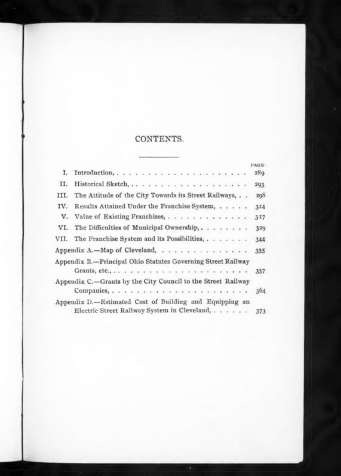

Hopkins, 1896: quanto valiam as concessões de bondes de Cleveland?
Leitura: 10 min
Em 1896, William R. Hopkins calculou o valor das concessões de bondes de Cleveland pelo custo de reposição das linhas e comparou concessão, arrendamento e operação municipal.


Em 22 de abril de 1896, o legislativo de Ohio aprovou uma lei que permitia às câmaras municipais prorrogar todas as concessões de bondes existentes por cinquenta anos a partir daquela data, desde que as linhas se consolidassem. O limite legal das concessões era de vinte e cinco anos. Em Cleveland, isso punha nas mãos de quinze vereadores, nas palavras de William Rowland Hopkins, o poder de entregar a uma única empresa o serviço de bondes da cidade por duas gerações.
O estudo de Hopkins saiu como número duplo, 5–6, do primeiro volume dos Economic Studies, em dezembro de 1896. Uma nota da comissão de publicações explica a escolha: embora trate de detalhes de interesse imediato só para Cleveland, a investigação valeria como exemplo do método e do espírito com que o problema deveria ser abordado. O texto tem sete capítulos, da história das linhas às possibilidades do sistema de concessões, e apêndices com mapa, estatutos de Ohio, a lista das concessões da câmara, uma estimativa de custo de um sistema elétrico novo e os bens declarados ao fisco.
O ponto de partida é metodológico. Hopkins recusa as comparações habituais com cidades britânicas, sobretudo Glasgow, que tinha cerca de três vezes a população de Cleveland numa área de mais ou menos um terço. Capital, quilometragem, densidade, distância das viagens e custo do trabalho eram diferentes demais. Cada cidade teria de resolver o problema com os seus próprios dados, e esses dados, diz ele, as empresas escondiam.
Como nove linhas de cavalos viraram duas empresas?
Hopkins divide a história em três períodos. O das concessões originais, de 1859 a 1875, em que todas as concessões então em vigor foram dadas; a última, em 16 de junho de 1874. O das renovações e extensões, de 1874 a 1889, em que todas foram renovadas, uma delas duas vezes, e ganharam ramais. E o da consolidação, a partir de 1889, ano em que chegaram o cabo e a eletricidade. Em maio de 1893, todas as linhas ficaram sob duas empresas: a Cleveland Electric Railway Company e a Cleveland City Railway Company, cuja fusão já estava legalmente prevista.
O autor reconhece os ganhos. Com a consolidação veio um sistema de baldeação que, na prática, permitia ir de qualquer ponto da cidade a qualquer outro com uma só passagem, porque quase todas as linhas partiam da Public Square. Ele chega a duvidar que alguma cidade americana tivesse serviço melhor. Seis linhas suburbanas já tinham concessão, quatro operavam, e o sistema alcançava as cidades num raio de trinta milhas.
O que a cidade cobrava pelas ruas?
Hopkins propõe três critérios para julgar qualquer política: bom serviço, retorno justo à cidade pelos privilégios concedidos e eliminação da corrupção na entrega das concessões. Pelo primeiro, a lei bastava: estatutos e posturas davam à câmara poder sobre construção, carros, aquecimento, neve e limpeza. Em 1879, ao renovar duas concessões, a câmara reservara ainda o direito de alterar a tarifa.
“reserva-se o direito de, no futuro, aumentar ou diminuir a tarifa” (reserves to itself the right to hereafter increase or diminish the rate of fare)
Pelo segundo critério, o resultado era quase nulo. As únicas contrapartidas efetivamente cobradas eram a pavimentação de uma faixa entre os trilhos, de dezesseis pés para via dupla e sete para via simples, e uma licença anual de dez dólares por carro. Havia dezessete anos a câmara não exercia o direito de reduzir tarifas em duas das melhores linhas. Para Hopkins, as empresas tinham obtido, por períodos de trinta e seis a cinquenta e quatro anos, os privilégios de uma cidade próspera a custo muito baixo.
O mecanismo, segundo ele, eram as renovações antecipadas. O estatuto permitia renovar uma concessão “na sua expiração”, mas a câmara passou a renovar a qualquer tempo: das nove concessões originais, sete foram renovadas antes do prazo, uma delas com dezesseis anos ainda por correr. O único caso levado à justiça, a renovação de Garden Street, de 22 de março de 1880, foi mantido pelo tribunal de circuito, que considerou a renovação favorável ao interesse público. Hopkins julga o precedente frágil para as demais. Somavam-se as extensões: linhas inteiras, que poderiam ir a concorrência, foram dadas como ramais das existentes, sem licitação nem pagamento.
Quanto valiam as concessões?
O capítulo central confronta o que as empresas declaravam. A Cleveland Electric informava capital ordinário de US$ 12 milhões, integralizado, e US$ 2.749.000 em títulos emitidos. Pelas contas de Hopkins, mesmo admitindo 105 milhas de via simples, eram cerca de US$ 140 mil de capital e dívida por milha. Nos relatórios às casas que vendiam os seus títulos, porém, a empresa dizia ter investido pouco mais de US$ 7 milhões: menos de US$ 67 mil por milha, e só US$ 4.251.000, descontados os títulos, para US$ 12 milhões em ações.
Os resultados contavam outra história. Na Cleveland Electric, a parcela da receita bruta consumida pelas despesas operacionais caiu de 72,1% em 1892 para 69,4% em 1893 e ficou em 65,4% em 1895. Desde a consolidação, a receita bruta crescera US$ 300 mil e as despesas, US$ 100 mil: dois terços do aumento do tráfego iam para o resultado, e o volume de negócios crescia cerca de 5% ao ano. Se a cidade recebesse tudo o que excedesse os juros dos títulos e 10% sobre o capital que a empresa dizia ter investido, ganharia perto de US$ 50 mil naquele ano da Cleveland Electric e mais de US$ 80 mil da Cleveland City, com valores crescentes depois.
Mas a pergunta certa, insiste Hopkins, não é quanto as linhas custaram, e sim quanto custaria repô-las. Onde há concorrência, um equipamento vale o seu custo de reposição, não o que já se gastou nele, inclusive o que deveria ter sido baixado como depreciação. Ele chama esse ponto de chave de toda a situação.
A diferença de mais de US$ 5 milhões entre o investimento alegado e o custo de reposição seria, para o autor, um presente às empresas se a concessão de cinquenta anos tomasse o primeiro como base, porque as revisões de tarifa previstas no vigésimo e no trigésimo quinto anos partiriam dele. Uma empresa nova, com o mesmo volume de títulos a 5%, teria US$ 250 mil de juros sobre um resultado de US$ 1,1 milhão; pagaria 10% sobre US$ 2 milhões de capital e ainda sobrariam US$ 650 mil. Daí a estimativa de que se poderia pagar meio milhão de dólares só pelas concessões daquele ano.
A prefeitura deveria comprar os bondes?
Hopkins examina três caminhos: concessão, compra para arrendamento e compra para operação municipal. O arrendamento, argumenta, é em princípio o mesmo que a concessão, só que com trilhos e carros incluídos, e a sua vantagem duraria apenas até as concessões vencerem. O preço de compra não ficaria longe de US$ 15 milhões, porque incluiria o valor das concessões em vigor. A 5%, os juros seriam de US$ 750 mil por ano, contra um resultado de cerca de US$ 1,1 milhão, e a cidade teria de recuperar, em cerca de catorze anos, pelo menos US$ 8 milhões pagos acima do valor real das linhas. Glasgow tinha US$ 1,7 milhão investidos enquanto arrendava as suas linhas, e Toronto pagara US$ 1,4 milhão.
Contra a operação municipal, o argumento é sobretudo de custo do trabalho, cerca de 70% das despesas operacionais. Em Cleveland, um policial recebia mil dólares por ano e um bombeiro, 960, com promoção e aposentadoria de meio salário após vinte anos. O condutor de bonde ganhava vinte centavos por hora, sem promoção nem pensão, e não passava muito de seiscentos dólares por ano. Hopkins supõe que, empregados pela cidade, os cerca de dois mil trabalhadores dos bondes obteriam pela via política o mesmo que os duzentos e cinquenta bombeiros: só esse ajuste reduziria o resultado em mais de meio milhão de dólares e levaria a um déficit de duzentos a trezentos mil dólares. Ele cita ainda a lei do chamado Federal Plan, que obrigava a cidade a contratar particulares para qualquer obra acima de 250 dólares.
O que o autor propõe?
A conclusão é que o sistema de concessões, com limites adequados, é o melhor caminho, e que o seu defeito fatal foi o poder, assumido pela câmara, de renovar concessões a qualquer tempo. A posição da cidade era de vantagem: as concessões começariam a vencer em pouco mais de sete anos e terminariam todas em menos de dezoito. A lei de cinquenta anos, ao contrário, substituiria esse mosaico por uma concessão única válida até 22 de abril de 1946, em troca de ganhos que ele considera pequenos: as licenças protegidas somavam menos de dez mil dólares por ano, e a taxa sobre a receita bruta que a lei proibia reduzir era “exatamente nada”.
“a política da cidade, quanto às concessões, deveria ser de espera” (the policy of the city in the matter of grants, should be a waiting one)
Hopkins lista seis linhas de ação: reduzir tarifas onde a câmara reservara esse direito, como experimento para conhecer o custo real do serviço; contestar na justiça as renovações de validade duvidosa; proibir por lei renovações fora de datas fixas; revogar a lei de cinquenta anos; impedir que linhas inteiras sejam concedidas como extensões; e dar à cidade o poder de exigir das concessionárias as informações necessárias para avaliar as concessões.
Na minha leitura
Na minha leitura, o estudo antecipa a pergunta que organiza a regulação de serviços públicos: sobre que base de ativos se calcula o retorno permitido. Hopkins separa com clareza três números, o capital emitido, o investimento histórico alegado e o custo de reposição, e mostra que a escolha entre eles decide quem fica com a renda criada pelo crescimento da cidade. A proposta de reduzir tarifas até que as empresas prefiram abrir os livros é, no fundo, um instrumento para obter informação que o regulador não tem.
O capítulo sobre a operação municipal é menos uma defesa da empresa privada do que uma análise de incentivos e custos: quem fixa salários, quem responde por perdas, quanto custa o capital da compra. Também a sua crítica às renovações antecipadas é sobre o desenho do contrato. Uma concessão que pode ser renovada a qualquer momento perde a única disciplina que a concorrência pelo mercado oferece, a do vencimento.
Glossário
- Concessão (franchise)
- direito, dado pela cidade, de usar as ruas para operar um serviço, por prazo e condições definidos.
- Renovação antecipada
- prorrogação de uma concessão antes do seu vencimento, sem nova concorrência.
- Extensão
- ramal acrescentado a uma concessão existente, que vence junto com ela.
- Baldeação (transfer)
- bilhete que permite trocar de linha sem pagar nova passagem.
- Ações aguadas (watered stock)
- capital emitido acima do valor efetivamente investido na empresa.
- Custo de reposição
- quanto custaria construir hoje um equipamento equivalente ao existente.
- Fundo de amortização (sinking fund)
- reserva anual destinada a repor o capital ao fim de um prazo.
- Via simples (single track)
- medida de extensão que conta cada trilho de mão única separadamente.
Fontes
- The Street Railway Problem in Cleveland (pp. 289–354). Internet Archive (número completo, PDF)
- Appendices A–E (pp. 355–376). Internet Archive (número completo, PDF)
- Número completo digitalizado (domínio público): Internet Archive.
Documento em domínio público (EUA, publicado antes de 1931), via JSTOR Early Journal Content e Internet Archive. Resumo e comentário do autor deste site, sem afiliação com a American Economic Association. Encontrou um erro? Escreva: a correção é publicada no próprio texto, com data.
← ES 4 · Lexis, 1895: por que o bimetalismo seria um salto no escuro ES 6 · Adams, 1896: sem propriedade industrial não há liberdade industrial →